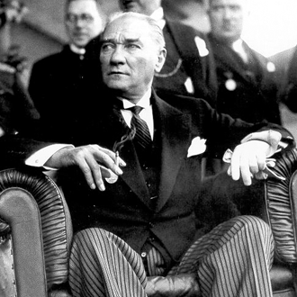

- sanyi：神所要求的专一。以色列人的问题不是在他们不敬拜耶和华，而是在他们敬拜耶和华的同时也敬拜其他的偶像。“我是耶和华，这是我的名；我必不将我的荣耀归给假神，也不将我的称赞归给雕刻的偶像。”(以赛亚书 42:8 和合本)
- Future_默默Farm：人的忘恩和悖逆&神的大能和信实（申命记1-13章）：摩西一次又一次回忆重复神拯救以色列民出埃及和在旷野供应他们的恩典 提醒他们要尽心尽性爱神。然而即使如此 以色列百姓仍然硬着心 造偶像 吵着要回埃及 吵着要吃肉 看到敌人就退缩…但神还是供应怜悯他们 立下律例保护他们 守约带他们进入应许之地
- 张非比_：士师记16章-人因神的拣选而变得特别 | 我以为参孙的头发是他力量的秘密所在，是特别的。殊不知头发终归不过是毛发而已。当参孙回转向神时，我才明白参孙的力量源泉不在头发，参孙的特别之处无关他本身。一切都在于神，在于神的拣选。
- 樱井啊呦呦呦zzz：每一次寻求祂的帮助，来完成你无法完成的工作，你就是在预留空间让他参与。
- mini碗_：耐心等候，常常聆听。
- Kaili是进击的小巨人：读诗篇，细细阅读。深有感触…

- sanyi：一位国内的小伙伴，是主日学老师，所有人都劝她应该去省会发展，对她的工作有更好的前景，可是每次祷告，神都把母会那群孩子托付给她，使她不忍离开。我常想起她的忠心，她的甘愿，这时常鼓舞我：不是我在哪里会对我未来更好，而是我在哪里对神的家更好。
- jingerfei：她像小太阳一样 发着光 温暖着身边的人 她啊 是上帝爸爸借着的那双手 还记得第一次她给我做拉手祷告的情形 也是因为她的爱 我受洗归主了 成了她所结的果子 她啊 一心想做起教会里青年团契 在她祷告和努力下 教会里的长辈终于开始注意到我们这批年轻人了 连教会的四楼都开始装修 留给年轻人了 她啊 是爱
- 滚滚少女_：我有一个好朋友，她之前是xjs，后来由于禾场那边打仗就回来了。而且也因为某些情况，她目前在家工作。我们在高三毕业的yh里认识，大学期间一直彼此扶持。一起在大学生的团队里服侍，一起带yh，一起去dx。我们见证过彼此的属灵低谷，一起走过低谷，一起成长。她会鼓励我，也会帮助我，很感恩。
- 萌黑米的杰西卡：带我信主的那位朋友，他从20岁就开始全职服事主，教会有段时间很困难，好几个月给他连工资都发不了。他原来上学时候是那种班上最好看，穿的最时尚的男生，可是自从生命被耶稣改变后，就完全不看重这些了。他很有才华，这些年有不少人给他介绍工作，但是他都没去。很感谢他一直以来在信仰上对我的陪伴
- JOYJesusOthersYourself：每个阶段都有不同的。真的，但我现在没有[允悲][允悲][允悲][允悲]身为组长，推着大家走真的很累了 期待家人一起同行 一起成长啊，肯付代价[心]
- Qianmu的查经笔记：屬靈小夥伴😔一直以來缺乏著，不知道BBN聖經廣播網、福音TV、佈道會講座算不算？或者像三一做的信仰分享time集合算不算，看到一群光照著的小夥伴分享信仰的故事，又感覺不至缺乏[小仙女]
- ChoCkerC：刚晚上跟她视完频，她问我我喜欢她什么，我说她非常爱上帝 非常可爱 非常善良 非常真诚 非常漂亮非常有气质，我跟她约定每天分享自己的读经内容和感想，就算结婚也不停息。

- Mustafa Kemal serves as Chief of Staff in suppression of revolt in Albania.
- Mustafa Kemal sent to Paris with military mission to attend French army manoeuvres.